Here's a sampler of practice problems you can use to prepare for the final exam. This collection of problems is drawn from past CS106B final exams given over the years. It's not meant to be a representative sample of the length of the final exam - this collection of problems is far bigger than any exam I've ever given in any class - but rather to give you a sense of what sorts of questions you might expect to see.
Problem One: Data Structure Sleuthing
On Assignment 5, you gained experience writing code that met specific runtime bounds. On Assignments 6 and 7, you saw how to implement a number of common container types. This question is designed to let you demonstrate what you’ve learned about algorithmic analysis and data structure design.
Below are four functions. We picked one of those functions and ran it on many different values of n. We captured the output of that function on each of those inputs, along with the runtime. That information is printed in the table below.
int function1(int n) {
Stack<int> values;
for (int i = 0; i < n; i++) {
values.push(i);
}
int result;
while (!values.isEmpty()) {
result = values.pop();
}
return result;
}
int function2(int n) {
Queue<int> values;
for (int i = 0; i < n; i++) {
values.enqueue(i);
}
int result;
while (!values.isEmpty()) {
result = values.dequeue();
}
return result;
}
int function3(int n) {
Set<int> values;
for (int i = 0; i < n; i++) {
values.add(i);
}
int result;
for (int value: values) {
result = value;
}
return result;
}
int function4(int n) {
Vector<int> values;
for (int i = 0; i < n; i++) {
values.add(i);
}
int result;
while (!values.isEmpty()) {
result = values[0];
values.remove(0);
}
return result;
}
| n | Time | Return Value |
|---|---|---|
| 100,000 | 0.137s | 99999 |
| 200,000 | 0.274s | 199999 |
| 300,000 | 0.511s | 299999 |
| 400,000 | 0.549s | 399999 |
| 500,000 | 0.786s | 499999 |
| 600,000 | 0.923s | 599999 |
| 700,000 | 0.960s | 699999 |
| 800,000 | 1.198s | 799999 |
| 900,000 | 1.335s | 899999 |
| 1,000,000 | 1.472s | 999999 |
- For each of these pieces of code, tell us its big-O runtime as a function of n. No justification is required.
- For each of these pieces of code, tell us whether that function could have given rise to the return values reported in the rightmost column of the table. No justification is required.
- Which of the four functions could be the one we ran? If there’s just a single option, tell us why that option is right and all the others are wrong. If there’s multiple options, tell us why those options are possible and the others aren’t. Justify your answer in at most fifty words.
- For each of these pieces of code, tell us its big-O runtime as a function of n. No justification is required.
The runtimes are as follows:
function1runs in time O(n).function2runs in time O(n).function3runs in time O(n log n).function4runs in time O(n2).
Some explanations:
In function1, we do n pushes followed by n pops. The cost of each stack operation is amortized O(1), so this means we’re doing 2n operations at an effective cost of O(1) each for a net total of O(n). The same is true about queue operations; each one takes amortized time O(1), which is why function2 takes time O(n) as well.
For function3, inserting an element into a set takes time O(log n). This means that the cost of inserting n elements is O(n log n). The cost of iterating over the tree is only O(n), so the net runtime is O(n log n).
For function4, adding n elements to the end of a vector takes time O(n). However, removing from the front of a vector with n elements takes time O(n), since we have to shift all the other elements back one position. This means that the overall runtime is O(n2).
- For each of these pieces of code, tell us whether that function could have given rise to the return values reported in the rightmost column of the table. No justification is required.
The answers:
function1cannot produce the given output.function2will always produce this output.function3will always produce this output.function4will always produce this output.
Some explanations:
In function1, since elements are stored in a stack, the last element popped is the first element pushed, which would always be zero. Therefore, we’d expect to see a column of zeroes in the table, which doesn’t match what’s actually there.
In function2, the last element removed from the queue is the last element added to the queue, which, here, would be n – 1, matching the output.
In function3, since the Set type is backed by a binary search tree, it stores its elements in sort-ed order. Iterating over the set, therefore, will visit the elements in ascending order, so the last element iterated over by the loop would be n – 1, matching the output.
Finally, in function4, we remove elements from the vector in the reverse order in which they’re added, matching the queue’s ordering and making the last element visited exactly n – 1.
- Which of the four functions could be the one we ran? If there’s just a single option, tell us why that option is right and all the others are wrong. If there’s multiple options, tell us why those options are possible and the others aren’t. Justify your answer in at most fifty words.
Both function2 and function3 are plausible here.
First, notice that the runtime appears to be O(n); doubling the size of the inputs roughly doubles the runtime. However, since runtimes of O(n) and O(n log n) can look pretty similar just given the raw runtime numbers, we can’t rule out the possibility that the runtime really is O(n log n).
We know that function1 can’t be correct, since it has the wrong return value, and function4 can’t be correct because the runtime numbers are inconsistent with an O(n2) runtime. Therefore, we ran either function2 or function3.
Problem Two: Rigging a Tournament
This question explores how to use recursion to determine who would win an elimination tournament and, somewhat mischievously, how to set up a tournament so that your favorite player ends up winning.
A tournament bracket is a type of tournament structure for a group of players. The players are lined up in some initial order (here, C, E, A, G, D, F, H, B, as you can see on the left column). The players are paired off by their positions, with the first player competing against the second, the third player competing against the fourth, etc. The winner of each game advances to the next round, and the loser is eliminated. For example, in the first round, player C won her game against player E, player A lost his game against player G, player D won her game against player F, and player H lost his game against player B. Those players are again paired off, making sure to preserve their relative ordering. Thus players C and G and players D and B face off in the second round, with players G and D winning and advancing to the next round. Finally, players G and D face off, and player D emerges victorious. Since she’s the last player remaining, player D is the overall winner of the tournament.
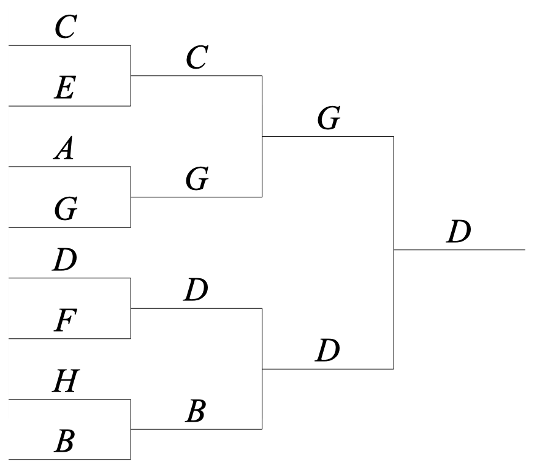
Part 1: Overall Winner Of
Your task in the first part of this problem is to write a recursive function:
string overallWinnerOf(const Vector<string>& initialOrder);
that takes as input a vector representing the ordering of the players in the initial tournament bracket, then returns the name of player who ends up winning the overall tournament.
In the course of implementing this function, assume you have access to a helper function
string winnerOf(const string& p1, const string& p2);
that takes as input the names of two players, then returns which of those two players would win in a direct matchup.
Some notes on this problem:
- You can assume the number of players is a perfect power of two (for example, 1, 2, 4, 8, 16, 32, 64, etc.), so there will never be a case where there’s an “odd player out” who isn’t assigned to play a game in some round. This also means you’ll never get a list of zero players.
- You should not make any assumptions about how a matchup between two players would go based on previous matchups. To determine how a match would go, call the winnerOf function.
- This part of the problem must be implemented recursively – that’s what we’re testing here. 😃
There are many ways to solve the first part of this problem. Here are three options.
/* To find the winner of a tournament, split the tournament in half. Find the
* winner in the first and second halves, then have them play a game against
* one another.
*/
string overallWinnerOf(const Vector<string>& initialOrder) {
/* Base Case: If there’s one player left, that player wins! */
if (initialOrder.size() == 1) return initialOrder[0];
int half = initialOrder.size() / 2;
return winnerOf(overallWinnerOf(initialOrder.subList(0, half)),
overallWinnerOf(initialOrder.subList(half, half)));
}
/* … or … */
/* Pair off the players so that each plays a game against the next player in the
* ordering, then form an elimination tournament from those players in the same
* relative order and see who wins!
*/
string overallWinnerOf(const Vector<string>& initialOrder) {
/* Base Case: If there’s one player left, that player wins! */
if (initialOrder.size() == 1) return initialOrder[0];
Vector<string> nextRound;
for (int i = 0; i < initialOrder.size(); i += 2) {
nextRound += winnerOf(initialOrder[i], initialOrder[i + 1]);
}
return overallWinnerOf(nextRound);
}
/* … or … */
/* Treat the Vector like a Queue! Pull off the first two players, have them play
* a game against one another, then put the winner on the back. This process will
* pair off the players in the same order as required by the tournament bracket.
*/
string overallWinnerOf(const Vector<string>& initialOrder) {
/* Base Case: If there’s one player left, that player wins! */
if (initialOrder.size() == 1) return initialOrder[0];
/* Drop off the first two players. */
auto nextRound = initialOrder.sublist(2, initialOrder.size() - 2);
/* Put the winner on the back. */
nextRound += winnerOf(initialOrder[0], initialOrder[1]);
return overallWinnerOf(nextRound);
}
Part 2: Can Rig For
Changing the initial order of players in a tournament can change the outcome of that tournament. For example, imagine that player A is a very strong player who would win against every player except player G. In the tournament bracket shown to the left, player A immediately gets eliminated from the tournament. On the other hand, in the tournament bracket shown to the right, player A ends up winning the entire tournament, since player G get eliminated before she gets a chance to play a game against player A.
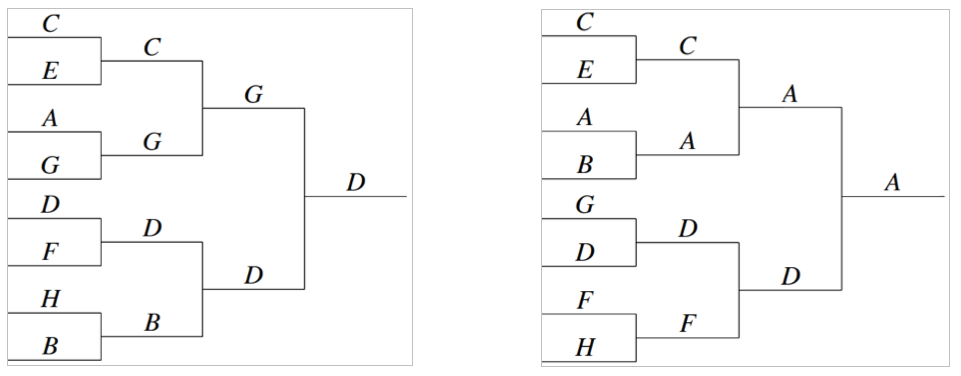
Because the winner of a tournament depends on the player ordering, in some cases it is possible to “rig” the outcome of a tournament by changing the initial player ordering. For example, if you were a huge fan of player D and wanted her to be the overall winner, and if you knew in advance which opponents player D would win against, you could try different orderings and come up with the bracket to the left. If you wanted player A to be the overall winner, then you could set up the players in the order to the right. In some cases, there’s nothing you can do to ensure someone will win the tournament. For example, a player who you know will lose every game they play will always lose their first game and be eliminated.
Your task is to write a function
bool canRigFor(const string& player, const Set<string>& allPlayers,
Vector<string>& initialOrder);
that takes as input the name of a player and a set containing the names of all the players in the tournament, then returns whether there’s some initial ordering of the players that will cause that player to be the overall winner. If so, your function should fill in initialOrder with one such possible ordering.
Some notes on this problem:
- You should make all the same assumptions about the input as in the first part of this problem: the number of players is always going to be a perfect power of two, that you should use the winnerOf function to determine who would win in a matchup, etc.
- Feel free to use the overallWinnerOf function from part (i) of this function in the course of solving this problem, even if you weren’t able to get a working solution.
- Don’t worry about efficiency. We’re expecting you to use brute force here, and no creative optimizations are necessary.
- This part of the problem must be done recursively. Again, that’s what we’re aiming to test here.
The second part of this problem is essentially a permutations problem: we just list off all possible ways to order the players and see if our favorite player ever wins!
bool canRigFor(const string& player, const Set<string>& allPlayers,
Vector<string>& initialOrder) {
return canRigRec(player, allPlayers, initialOrder, {});
}
bool canRigRec(const string& player, const Set<string>& allPlayers,
Vector<string>& initialOrder, const Vector<string>& soFar) {
/* Base Case: If everyone is already placed, see if our player wins! */
if (allPlayers.isEmpty()) {
if (overallWinnerOf(soFar) == player) {
initialOrder = soFar;
return true;
}
return false;
}
/* Recursive case: Try all possible next players. */
for (string nextPlayer: allPlayers) {
auto nextOrder = soFar;
nextOrder += nextPlayer;
if (canRigRec(player, allPlayers - nextPlayer, initialOrder, nextOrder)) {
return true;
}
}
/* Oh well, guess it’s not possible. */
return false;
}
Why we asked this question: We chose this question primarily to make sure that you were comfortable with recursive backtracking and recursive problem-solving strategies. The first part of this problem was designed to assess whether you were comfortable looking at a tree structure and deducing some sort of recursive pattern from it, and we hoped that the fact that there are several different solution routes you can choose from would make that part a good warm-up. The second part of this problem is essentially just a permutations problem, and we hoped that you’d be comfortable looking over the structure of the problem and recognizing this particular detail.
Fun fact: this problem is based on some research done by one of my former CS103 TAs, Michael Kim, who is currently a Ph.D student here.
Common mistakes: Most people got the first part of this problem right, or otherwise had a solution that was almost entirely correct. Nice job! The most common mistakes we saw were choosing the wrong base case (for example, assuming there were always at least two players) or indexing errors in the Vector.
For the second part of the problem, by far the most common mistake we saw was not recognizing that this problem is fundamentally a permutations problem. Solutions that didn’t approach the problem this way typically were much more complicated and didn’t correctly try all the necessary options.
Problem Three: Self-Organizing Lists
YouTube and Facebook have tons of data (literally, if you weigh all the disk drives they use to store things), though most of that data is rarely accessed. When you visit YouTube, for example, the videos that will show up will likely be newer videos or extremely popular older videos, rather than random videos from a long time ago. Your Facebook feed is specifically populated with newer entries, though you can still access the older ones if you’re willing to scroll long enough.
More generally, data sets are not accessed uniformly, and there’s a good chance that if some piece of data is accessed once, it’s going to be accessed again soon. We can use this insight to implement the set abstraction in a way that speeds up lookups of recently-accessed elements. Internally, we’ll store the elements in our set in an unsorted, singly-linked list. Whenever we insert a new element, we’ll put it at the front of the list. Additionally, and critically, whenever we look up an element, we will reorder the list by moving that element to the front. For example, imagine our set holds the strings Ugadi, Rosh Hashanah, Nowruz, Seollal, and Enkutatash in the following order:
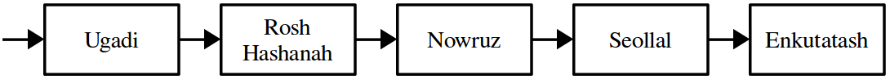
If we look up Nowruz, we’d move the cell containing Nowruz to the front of the list, as shown here:
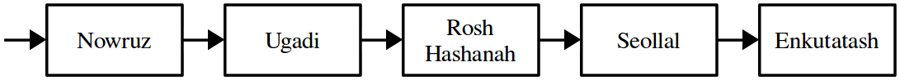
If we now do a look up for Nowruz again, since it’s at the front of the list, we’ll find it instantly, without having to scan anything else in the list.
If we now insert the new element Wep Renpet, we’d insert it at the front of the list, as shown here:
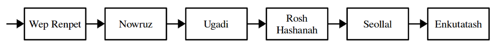
Now, if we do a lookup for Seollal, we’d reorder the list as follows:
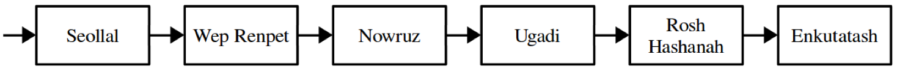
If we do an insertion to add Ugadi, since it’s already present in the set, we just move it to the front of the list, rather than adding another copy. This is shown here:
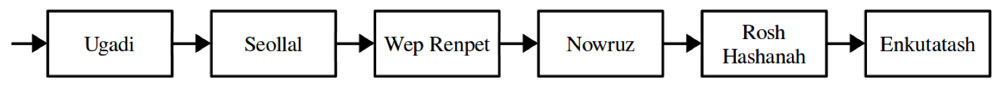
Finally, to remove an element from the list, we’d just delete the indicated cell out of the list. For example, deleting Wep Renpet would make the list look like this:
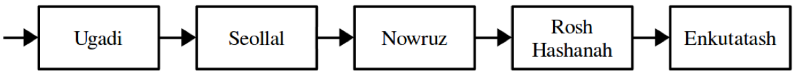
Your task is to implement this idea as a type called MoveToFrontSet. The interface is given at the bottom of this page. You’re responsible for implementing a constructor and destructor and for implementing the contains, add, and remove member functions.
Some notes on this problem:
- Your implementation must use a singly-linked list, not a doubly-linked list, but aside from that you can represent the linked list however you’d like.
- When doing a move-to-front, you must actually rearrange the cells in the list into the appropriate order. Although it might be tempting to simply swap around the strings stored within those cells, this is significantly less efficient than rewiring pointers, especially for long lists.
- You’re welcome to add any number of private helper data members, member functions, or member types that you’d like, but you must not modify the public interface provided to you.
- Your implementations of the member functions in this class do not need to be as efficient as humanly possible, but you should avoid operations that are unnecessarily slow or that use an unreasonable amount of auxiliary memory.
As a hint, you may find it useful to have your add and remove implementations call your contains member function and use the fact that it reorganizes the list for you.
class MoveToFrontSet {
public:
MoveToFrontSet(); // Creates an empty set
~MoveToFrontSet(); // Cleans up all memory allocated
bool contains(const string& str); // Returns whether str is present.
void add(const string& str); // Adds str if it doesn’t already exist.
void remove(const string& str); // Removes str if it exists.
private:
/* Add anything here that you’d like! */
};
/* Initializes the set so that it’s empty. */
MoveToFrontSet::MoveToFrontSet() {
}
/* Cleans up all memory allocated by the set. */
MoveToFrontSet::~MoveToFrontSet() {
}
/* Returns whether the specified element is in the set. If so, reorders the list so
* that the element is now at the front. If not, the list order is unchanged.
*/
bool MoveToFrontSet::contains(const string& str) {
}
/* Adds the specified element to the list, if it doesn’t already exist. Either way,
* the element should end up at the front of the list.
*/
void MoveToFrontSet::add(const string& str) {
}
/* Removes the specified element from the set. If that element doesn’t exist, this
* function should have no effect and should not reorder anything.
*/
void MoveToFrontSet::remove(const string& str) {
}
Here’s one possible solution:
class MoveToFrontSet {
public:
MoveToFrontSet();
~MoveToFrontSet();
bool contains(const string& str);
void add(const string& str);
void delete(const string& str);
private:
struct Cell {
string value;
Cell* next;
};
Cell* head;
}
/* Constructor makes the head null to signify that no elements are present. */
MoveToFrontSet::MoveToFrontSet() {
head = nullptr;
}
/* Destructor is our typical “deallocate a linked list” destructor. */
MoveToFrontSet::~MoveToFrontSet() {
while (head != nullptr) {
Cell* next = head->next;
delete head;
head = next;
}
}
bool MoveToFrontSet::contains(const string& str) {
Cell* prev = nullptr;
Cell* curr = head;
/* Scan the list, keeping track of the current pointer and previous pointer,
* until we find what we want or fall off the list.
*/
while (curr != nullptr && curr->value != str) {
prev = curr;
curr = curr->next;
}
/* If we didn’t find it, curr will be null since we walked off the list. */
if (curr == nullptr) return false;
/* If we found it and it’s not at the head of the list, move that element to
* the front of the list.
*/
if (curr != head) {
prev->next = curr->next;
curr->next = head;
head = curr;
}
return true;
}
void MoveToFrontSet::add(const string& str) {
/* If this element already exists, we’re supposed to move it to the front.
* That’s automagically handled for us by the contains call!
*/
if (contains(str)) return;
/* Put a new cell at the front of the list. */
Cell* cell = new Cell;
cell->value = str;
cell->next = head;
head = cell;
}
void MoveToFrontSet::remove(const string& str) {
/* See if the element is here. If not, there’s nothing to do. */
if (!contains(str)) return;
/* Nifty fact: the element to remove is now at the front of the list, since
* looking for it put it there! So just take it off the front.
*/
Cell* toRemove = head;
head = head->next;
delete toRemove;
}
Why we asked this question: We included this question for a number of reasons. First, we wanted to give you a chance to demonstrate what you’d learned about class design and working with linked lists. We figured this particular problem worked well because it involved linked list manipulations (along the lines of what you did in the Splicing and Dicing assignment) and the idea of having different member functions call one another. Second, we thought this particular linked list exercise of splicing out a node from a singly-linked list and moving it to another location would allow you to demonstrate whether you were comfortable with the idea of maintaining two pointers into a linked list (something you likely needed in the course of building a linked list from scratch) and of rewiring cell pointers. Finally, we thought this problem was interesting in of itself. This is an example of a self-adjusting data structure, and this particular structure is often used in data compression (look up move-to-front encoding). It’s also related to the more popular splay tree, an extremely fast and simple binary search tree data structure.
Common mistakes: We saw a number of solutions that contained memory errors, such as allocating cells unnecessarily (often, pointers were initialized to new Cell rather than nullptr) or reading from a cell after deleting it.
Many solutions attempted to implement contains in terms of insertion and deletion rather than the other way around. While in principle this works, it’s not at all efficient (it’s much faster to reorder existing linked list cells than it is to produce new cells from scratch) and makes the logic a lot trickier and therefore more error-prone.
Problem Four: Lower and Upper Bounds
In a binary search tree, the lower bound of a key is the node in the tree with the smallest value greater than or equal to the key, and the upper bound of a key is the node in the tree with the largest value less than or equal to the key. For example, in the BST shown here, the lower bound of 137 is the node containing 143, and the upper bound of 137 is the node containing 110.
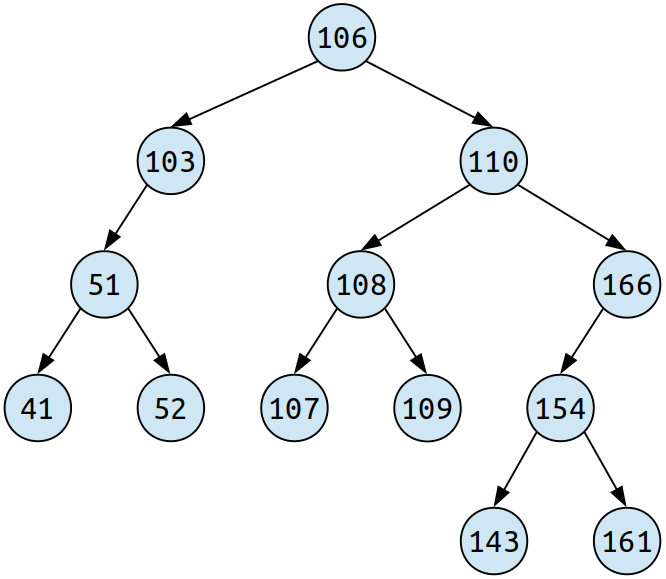
If the key is less than all the values, its upper bound is nullptr, so the upper bound of 15 is nullptr. (The lower bound of 15 is the node containing 41.)
Similarly, if the key is greater than all elements in the BST, its lower bound is nullptr. For example, the lower bound of 261 is nullptr. (The upper bound of 261 is the node containing 166.)
In the event that the key happens to appear inside the BST, then the key itself is its own lower bound and upper bound. For example, the lower and upper bounds of 106 are each the node containing 106.
It is a bit confusing that a key’s lower bound is always at least as large as its upper bound, but, alas, that is the naming convention we use.
Your task is to implement a function:
Bounds boundsOf(Node* root, int key);
that takes in a pointer to the root of a BST, along with an integer key, then returns the lower and upper bound of that key in the tree. Here, Node and Bounds are structs defined as follows:
struct Node {
int value;
Node* left;
Node* right;
};
struct Bounds {
Node* upperBound;
Node* lowerBound;
};
Some notes on this problem:
- For full credit, your implementation should run in time O(h), where h is the height of the tree. This means that you can’t necessarily explore the whole tree to find the upper and lower bounds. Due to how a BST is structured, though, you shouldn’t need to check every node.
- You may want to draw some pictures before diving into this problem. In particular, think about the recursive intuition for how BSTs are structured.
- There can be any number of nodes in the tree, including zero, and there are no restrictions on what the key can be.
- For full credit, you should not use any of the container types (
Map,Set,Vector,Lexicon, etc.).
There are many ways of solving this problem, and we’ve included four of them in this solutions set!
These first two solutions are based on the idea that finding the bounds in a tree is very, very similar to running a binary search in an array. In a binary search in an array, we have two pointers representing the range where the element can be. At each point in time, we probe the midpoint of the range and decide how to adjust the bounds based on how the comparison goes.
We can adapt that same idea here. The difference is that instead of storing indices of the bounds, we’ll store pointers to nodes representing those bounds. Instead of choosing the midpoint of the range, we’ll pick whatever the root of the tree happens to be.
There are several ways to code this approach up. This first one is recursive, and the second iterative:
/* Returns the upper and lower bounds of the node, given that we know that all
* elements in the tree are bounded from below and above by the specified nodes.
*/
Bounds boundsRec(Node* root, int key, Node* upper, Node* lower) {
/* Base case: If we're out of nodes, whatever bounds we've discovered are
* correct.
*/
if (root == nullptr) return { upper, lower };
/* Base case: If we have an exact match for the value, the current node is
* both the upper and lower bound.
*/
if (key == root->value) return { root, root };
/* Recursive case: If the value is too small, then the root node is going to
* be the lower bound unless we come across something even smaller.
*/
else if (key < root->value) {
return boundsRec(root->left, key, upper, root);
}
/* Recursive case: If the value is too big, then the root node is going to be
* the upper bound unless we come across something even bigger.
*/
else /* key > root->value */ {
return boundsRec(root->right, key, root, lower);
}
}
Bounds boundsOf(Node* root, int key) {
return boundsRec(root, key, nullptr, nullptr);
}
Here’s the iterative version. Note the similarity to binary search.
Bounds boundsOf(Node* root, int key) {
/* Bounds found so far. */
Node* lhs = nullptr;
Node* rhs = nullptr;
while (root != nullptr) {
/* If we match exactly, great! We're done. */
if (key == root->value) return { root, root };
/* Otherwise, we have to go left or right. Adjust the lhs
* and rhs accordingly.
*/
else if (key < root->value) {
rhs = root;
root = root->left;
}
else /* key > root->value */ {
lhs = root;
root = root->right;
}
}
return { lhs, rhs };
}
This next solution is based on a different insight that follows from the recursive definition of a binary search tree. First, if the tree is empty, then the bounds of the key we’re looking for are both null, since there’s nothing bigger or smaller than the key.
Otherwise, the tree consists of a node with two subtrees. Think about how the key relates to the parts of this schematic. If the key matches the root, then the root is both the upper and lower bound of the key. Otherwise, the key isn’t a match. Let’s suppose, just for expository purposes, that the key is less than the root. That tells us several things:
- The root can’t be the upper bound of the key. Why? Because the root is too big.
- The upper bound of the key, wherever it is, has to be in the left subtree. Why? Because the upper bound can’t be the root node (it’s too big), nor can in be in the right subtree (because those values are all bigger than the root, which is already too big.)
- The root might be the lower bound of the key, since it’s bigger than the key, but only if nothing in the left subtree is both bigger than the key and less than the root.
Based on these insights, we can build a different recursive algorithm that works by descending into the appropriate subtree and, optionally, patching up one of the upper or lower bounds.
Bounds boundsOf(Node* root, int key) {
/* Looking in an empty tree? Looking at something that's an exact
* match? Then you have your answer.
*/
if (root == nullptr || key == root->value) return { root, root };
/* If the key should be in the left subtree, get the bounds purely for
* that subtree, then see whether we should act as the lower bound.
*/
if (key < root->value) {
auto result = boundsOf(root->left, key);
if (result.lowerBound == nullptr) result.lowerBound = root;
return result;
}
/* Otherwise, it's in the right subtree. Use similar logic to the above. */
else /* key > root->value */ {
auto result = boundsOf(root->right, key);
if (result.upperBound == nullptr) result.upperBound = root;
return result;
}
}
You could also implement the above idea as two separate helper functions, as shown here:
Node* upperBoundOf(Node* root, int key) {
/* Got an empty tree? Have an exact match? We're done. */
if (root == nullptr || key == root->value) return root;
/* Otherwise, if the key is less than the root, the bound is
* purely in the left subtree because we're too big to be a bound.
*/
if (key < root->value) {
return upperBoundOf(root->left, key);
}
/* Otherwise, we're bigger than the root. The root node may then
* be the upper bound if one isn't found in the subtree.
*/
else /* key > root->value */ {
Node* result = upperBoundOf(root->right, key);
return result == nullptr? root : result;
}
}
Node* lowerBoundOf(Node* root, int key) {
/* Got an empty tree? Have an exact match? We're done. */
if (root == nullptr || key == root->value) return root;
/* Otherwise, if the key is greater than the root, the bound is
* purely in the right subtree because we're too small to be a bound.
*/
if (key > root->value) {
return lowerBoundOf(root->right, key);
}
/* Otherwise, we're smaller than the root. The root node may then
* be the lower bound if one isn't found in the subtree.
*/
else /* key < root->value */ {
Node* result = lowerBoundOf(root->left, key);
return result == nullptr? root : result;
}
}
Bounds boundsOf(Node* root, int key) {
return {
upperBoundOf(root, key),
lowerBoundOf(root, key)
};
}
Why we asked this question: We included this question for a few different reasons. First, we wanted to let you show us what you’d learned about binary search trees and their structural properties. Could you navigate down a BST based on how a particular key relates to the root value? Could you propagate information up through a series of recursive calls?
Second, we wanted to give you a chance to work through an algorithmic question involving binary search trees. You weren’t expected to immediately see how to compute the bounds of a particular key, but we hoped that your intuition about BSTs would help you determine what questions would be best to ask to arrive at a solution.
Common mistakes: There were two general classes of mistakes on this problem. First, there were regular, run-of-the-mill coding errors. Second, there were more problem-specific algorithmic concerns. Let’s begin with the coding errors. Perhaps the most common error we saw on this problem was trying to treat an object of type Bounds as a pointer. For example, we saw many solutions that included a line like this one:
⚠ Bounds result = new Bounds; ⚠
Here, the variable result is an honest-to-goodness Bounds object, not a pointer to one, so it doesn’t need to be (and in fact, can’t legally be) initialized using the new keyword. Remember, the new keyword produces a pointer, so this statement tries to assign a pointer (new Bounds) to a non-pointer (result). We suspect that people got tripped up here because Bounds is a struct that contains pointers, but which itself is not actually a linked structure.
Second, we saw a number of solutions that forgot to handle the case where the tree was empty. Some solutions legitimately forgot to account for this case, while others attempted to handle it but did so incorrectly. For example, we saw many submissions that included code fragments like these:
⚠ if (key == root->value) return { root, root }; ⚠
⚠ if (root == nullptr) return {nullptr, nullptr}; ⚠
We call this the “shoot first and ask questions later approach,” since you’re following the root pointer (shooting) before you determine whether it’s not null (asking questions). This code will crash in the case that root is null, since the the first line tries to dereference the pointer.
A more minor error we saw was mixing up Node* pointers, which represent pointers to nodes in the tree, with the integer values they contain. Sometimes we’d see people assigning numeric values to pointers, and (more frequently) we’d see solutions that compared integer keys directly against pointers.
We also saw some common recursive errors, such as making recursive calls and forgetting to return the value of the recursive call.
Let’s now turn to algorithmic errors. The most common algorithmic mistake we saw on this problem arose when people tried to look at the root and one of its children to try to size up where one of the bounds must be. For example, we saw many solutions along these lines:
⚠ if (key < root->value) { ⚠
⚠ if (root->left == nullptr || root->left->value < key) { ⚠
⚠ // lower bound is root ⚠
⚠ } else { ⚠
⚠ // recursively explore left subtree ⚠
⚠ } ⚠
⚠ } ⚠
The idea here is the following. Suppose we know that the key is less than the root’s value. What node, then, is the lower bound of the key? The root node’s value is bigger than the key, so it’s a candidate for being the lower bound. So how do we tell if there’s a better one? Well, if there’s no left child, then there’s nothing smaller than the root, so the root is the lower bound, and if there is a left child and the key’s value is sandwiched between the left child and the root, then the root should be the lower bound.
Everything in the above paragraph is correct, except for the last part of the last sentence. For example, consider the BST shown below. Now, what is the lower bound of 15? The correct answer should be the node containing 15, but if we use the above code, we’ll incorrectly report that the root is the lower bound because the key (15) is sandwiched between the left child’s value and the root’s value. That is, we have to look deeper in the tree to find the true lower bound. On the other hand, what’s the lower bound of 16? In that case, the correct answer actually is the root, even though, as above, the key is sandwiched between the root’s value and the left subtree’s value. However, we can only tell that because we can look deeper in the tree to see what other nodes are there.
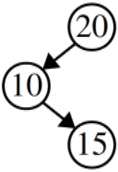
The reason for mentioning both cases here is that finding a bound in a tree can be tricky and isn’t something you can typically do by looking at a single pair of linked nodes. Just knowing a key is between two nodes in the tree doesn’t mean that one of those nodes has to be the bound. You may need to look more extensively in the tree to find the bound.
There was one last class of error we encountered that belongs to the category of “the code isn’t wrong, but it’s much more complex than it needs to be.” We saw many recursive implementations that, before descending into a left or right subtree, would check that the current node was a better lower / upper bound, respectively, than the best bound found so far. However, it’s not necessary to do this. For example, if you find that the key is less than the root’s value and move to the left, then the root node is guaranteed to be a better lower bound than whatever lower bound has been discovered so far. (Do you see why?) Similarly, if you find that the key is greater than the root’s value and move to the right, then the root node is guaranteed to be a better upper bound than whatever’s been discovered so far. (Do you see why?)
Problem Five: Workout Playlists
On Assignment 4, you wrote recursive code to determine whether it was possible to find objects of various types. This question serves as a coda to our treatment of recursive exploration and is designed to let you show us what you’ve learned in the process.
You’d like to put together a playlist for your next workout. You’d like to design the playlist so that
- its length is exactly equal to the length of your workout, and
- no song appears too many times in the playlist.
How many times is “too many times?” That depends. For a short workout, you might not want to hear the same song multiple times. For a long workout, you might be okay hearing the same song three or even four times. We’ll assume that when you sit down to start creating the playlist, you’ll have some magic number in mind.
Write a function
bool canMakePlaylist(const Vector<int>& songLengths,
int workoutLength, int maxTimes);
that takes as input a list of the lengths of the songs you’re considering putting on your playlist, along with the length of your workout and the maximum number of times you’re comfortable hearing a particular song. The function then returns whether there’s a playlist of exactly length workoutLength which doesn’t include any song more than maxTimes times.
Some notes on this problem:
- You must implement this function recursively.
- You can assume that workoutLength ≥ 0, that maxTimes ≥ 0, and that the length of each song is also greater than or equal to zero. You don’t need to handle the case where any of these quantities are negative.
- There can be any number of songs in songLengths, including zero.
- You just need to tell us whether there is a possible playlist with the given length, not what songs are on that playlist or what order you’d put them in.
- Each song may appear multiple times, and not all songs necessarily need to be used.
- The total length of all songs in your playlist should equal workoutLength. Note that this is not the same thing as saying that the total number of songs in your playlist should equal workoutLength.
- Be careful – greedy solutions won’t work here. There are combinations of song lengths, workout lengths, and maximum repeat counts where the only way to build a playlist of exactly the right length is to use fewer copies of a particular song than you’re allowed to.
- Your solution does not need to be as efficient as possible, but to receive full credit your solution must not use a recursive strategy that is needlessly inefficient.
An interesting aspect of this problem is that we aren’t required to actually return the playlist. We just need to see whether one exists. And if that’s the case, we don’t actually care about the order in which the songs appear in the playlist, just how many times each song appears. (Do you see why?)
This first recursive solution works by going one song at a time, asking how many times we’ll use it.
/* Can we add up to exactly the workout length using only songs from index
* start and forward?
*/
bool canMakeRec(const Vector<int>& songLengths, int start,
int workoutLength, int maxTimes) {
/* Base case: If the length is zero, yes, we can make it! Just have
* a playlist with no songs on it.
*/
if (workoutLength == 0) return true;
/* Base case: If we're out of songs, then no, we can't make it! */
if (start == songLengths.size()) return false;
/* Recursive case: We need to determine how many times to use this first
* song. See what those options are.
*/
for (int times = 0; times <= maxTimes; times++) {
/* If this will take too much time, stop searching. We know that using
* it any more times will only make things worse.
*/
int duration = songLengths[start] * times;
if (duration > workoutLength) break;
/* Otherwise, see what happens if we include this song that many times. */
if (canMakeRec(songLengths, start + 1,
workoutLength - duration, maxTimes)) {
return true;
}
}
/* If we're here, no options worked. */
return false;
}
bool canMakePlaylist(const Vector<int>& songLengths,
int workoutLength, int maxTimes) {
return canMakeRec(songLengths, 0, workoutLength, maxTimes);
}
This next solution is based on the idea that we’ll build up the playlist one song at a time, repeatedly choosing a next song that doesn’t exceed the time limit and making sure not to exceed our allotment. One of the challenges here is that multiple songs might have the same length, so we need to do some extra bookkeeping to track how many times each song has appeared on the playlist so far.
This approach is not as fast as the other one, so we would not award full credit. In particular, note that this will generate the same playlist multiple times, requiring a lot of extra work to compute the solution. Do you see why?
/* Can you make a playlist whose total length is exactly workoutLength using
* each song at most maxTimes times, given that the playlist already contains
* some number of copies of each song?
*
* The playlist is encoded as a list of the indices into the songLengths list.
*/
bool canMakeRec(const Vector<int>& songLengths,
int workoutLength, int maxTimes,
const Vector<int>& soFar) {
/* Base case: If the length of our playlist so far happens to match the
* length of workout, we're done.
*/
int length = lengthOf(soFar, songLengths);
if (length == workoutLength) return true;
/* Base case: If the current playlist is too long, it can't possibly
* work.
*/
if (length > workoutLength) return false;
/* Recursive case: Try each song that doesn't appear too many times. */
for (int i = 0; i < songLengths.size(); i++) {
/* Can we fit this in? Or have we used it too much? */
int copies = copiesOf(soFar, i);
if (copies < maxTimes) {
auto nextList = soFar;
nextList += i;
if (canMakeRec(songLengths, workoutLength, maxTimes, nextList)) {
return true;
}
}
}
/* Oh fiddlesticks. */
return false;
}
/* Given a list of which songs to play in the playlist, returns how long
* the playlist is.
*/
int lengthOf(const Vector<int>& songIndices,
const Vector<int>& songLengths) {
int result = 0;
for (int index: songIndices) {
result += songLengths[index];
}
return result;
}
/* Given a list of songs to play, returns how many times the given song
* appears.
*/
int copiesOf(const Vector<int>& songIndices, int index) {
int result = 0;
for (int song: songIndices) {
if (song == index) result++;
}
return result;
}
bool canMakePlaylist(const Vector<int>& songLengths,
int workoutLength, int maxTimes) {
return canMakeRec(songLengths, workoutLength, maxTimes, {});
}
Why we asked this question: We included this question as a final wrap-up to our treatment of recursive exploration. We hoped that this problem, which is very much in the same spirit as the questions on the midterm, would be a great way for folks to show how much they’d learned since the start of the quarter.
Common mistakes: Although many solutions treated this as a permutations problem, that’s not the best fit for this problem because the order of the songs doesn’t matter. Specifically, the total length of a playlist purely depends on the total lengths of the songs on that playlist, not the order in which they appear.
We also saw a number of solutions that approached this problem in a way that did introduce unnecessary inefficiencies. For example, some solutions would never check the total length of the playlist they’d produced until the very end of the recursion, focusing much of the search effort on dead-ends that couldn’t pan out. We did deduct points for solutions like these, as they could be significantly improved with very little code without impacting the overall recursive strategy.
Aside from these efficiency concerns, the most common error was not handling the case where there were multiple songs with the same length in the songLengths vector. For example, solutions that tracked frequencies by associating each length with its frequency wouldn’t work correctly if, for example, there were two songs that were exactly three minutes long. We also saw a number of solutions that approached this problem in a way that did introduce unnecessary inefficiencies. For example, some solutions would never check the total length of the playlist they’d produced until the very end of the recursion, focusing much of the search effort on dead-ends that couldn’t pan out. We did deduct points for solutions like these, as they could be significantly improved with very little code without impacting the overall recursive strategy. Aside from these efficiency concerns, the most common error was not handling the case where there were multiple songs with the same length in the songLengths vector. For example, solutions that tracked frequencies by associating each length with its frequency wouldn’t work correctly if, for example, there were two songs that were exactly three minutes long. Besides these problem-specific errors, we saw a number of general recursive issues here. Some solutions contained unconditional return statements inside of a for loop, cutting off the search too early. Others modified data across recursive calls in ways that caused future recursive calls to have incorrect information passed down into them. Otherwise interchanged the order of base cases in a way that caused the code to not work as expected.
Besides these problem-specific errors, we saw a number of general recursive issues here. Some solutions contained unconditional return statements inside of a for loop, cutting off the search too early. Others modified data across recursive calls in ways that caused future recursive calls to have incorrect information passed down into them. Otherwise interchanged the order of base cases in a way that caused the code to not work as expected.
Problem Six: Binary Heaps
In Assignment 6, you implemented the HeapPQueue type using a binary heap. As a refresher from that assignment, the HeapPQueue stored objects of type DataPoint, where DataPoint is given as follows:
struct DataPoint {
string name;
int weight;
};
We’ve created a binary heap storing these six DataPoint objects:
{ "Emu", 1 } { "Auk", 2 } { "Cow", 3 }
{ "Yak", 4 } { "Doe", 5 } { "Ewe", 6 }
These elements were inserted into the binary heap in some order, but you don’t know what that order is. Below is a picture of the shape of the binary heap holding these elements, but not what DataPoints are stored in each of the nodes. Each node has been assigned a letter so that we have a nice way to refer to it later; otherwise, the letters have no special meaning.
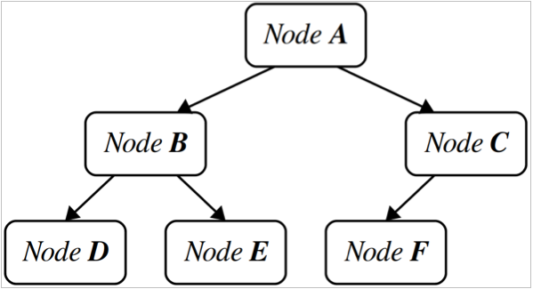
Regardless of the order in which we inserted the above six elements into the binary heap, we are guaranteed that { "Emu", 1 } will end up in Node A due to the rules of how binary heaps work. Your task is to determine where other elements may end up.
Answer each of the following questions. No justification is needed. Incorrect answers will not receive points, but otherwise there is no penalty for an incorrect guess.
- (1 Point) In the space below, list the letters of all nodes that may contain
{ "Auk", 2 }. - (1 Point) In the space below, list the letters of all nodes that may contain
{ "Doe", 5 }.
- (1 Point) In the space below, list the letters of all nodes that may contain
{ "Auk", 2 }.
Answer: Node B and Node C.
There is only one DataPoint whose weight is less than that of { "Auk", 2 }, and that’s { "Emu", 1 }. As a result, { "Auk", 2 } can’t go in nodes D, E, or F, since anything going in one of those two nodes would have to have two other DataPoints with lower weight (the immediate parent, plus node A). Additionally, { "Auk", 2 } can’t go in Node A, since that’s where { "Emu", 1 } goes. Therefore, the only options are B and C. To convince yourself that it’s possible for { "Auk", 2 } to go there, we’d recommend drawing out some sample heaps where this actually happens.
- (1 Point) In the space below, list the letters of all nodes that may contain
{ "Doe", 5 }.
Answer: Node C, Node D, node E, and node F.
Using similar reasoning to the above answer, there is only one DataPoint whose weight is greater than { "Doe", 5 }, and that’s { "Ewe", 6 }. Therefore, { "Doe", 5 } can’t go anywhere that has two or more children, since there aren’t enough items to fill those spots. That rules out Node A and Node B. To confirm the rest of the options are possible, you can quickly sketch out different binary heaps that indeed place { "Doe", 5 } in each spot.
Why we asked this question: This question was designed to see if you were comfortable with how the rules for binary heaps worked. Unlike binary search trees, which have very strict rules about which elements can go where, binary heaps have fairly lax rules and there’s a lot of flexibility about where items can go. You can solve this problem either by drawing lots of binary heaps and watching what happens, or by looking at the structural properties of the tree to figure out what goes where, or both!
Problem Seven: Word Walks
Part 1: Overlapping Words
Your first task in this question is to finish an implementation of a function
bool wordsOverlap(const string& left, const string& right);
that takes as input two words, then returns whether the last letters of the string left overlap with the first letters of the string right. For example, the strings "wonder" and "derby" overlap like this:
wonder derby
The words "orange" and "angel" overlap like this:
orange angel
The words "violin" and "naqareh" overlap like this:
violin
naqareh
The words "aa" and "aardvark" can overlap in two different ways:
aa aa aardvark aardvark
Any word overlaps with itself; for example, here’s "springbok" overlapping itself:
springbok springbok
We’ve given a partial implementation of this function in the space below. Please fill in the rest of this implementation by filling in the blanks. Do not add, remove, or edit code anywhere else.
bool wordsOverlap(const string& left, const string& right) {
for (int i = 0; ______________________; i++) {
if (left.substr(________) == right.substr(_______)) {
return true;
}
}
return false;
}
Here’s one possible answer:
bool wordsOverlap(const string& left, const string& right) {
for (int i = 0; i < min(left.size(), right.size()); i++) {
if (left.substr(left.size() - 1 - i) == right.substr(0, i + 1)) {
return true;
}
}
return false;
}
Another option:
bool wordsOverlap(const string& left, const string& right) {
for (int i = 0; i < left.size() && i < right.size(); i++) {
if (left.substr(left.size() - 1 - i) == right.substr(0, i + 1)) {
return true;
}
}
return false;
}
Both options work by trying all nonempty suffixes of left and nonempty prefixes of right.
This third option uses the fact that the string::substr function will trim the length of the substring to never exceed the length of the input string:
bool wordsOverlap(const string& left, const string& right) {
for (int i = 0; i < left.size(); i++) {
if (left.substr(i) == right.substr(0, left.size() - i)) {
return true;
}
}
return false;
}
Part 2: Word Walk
If you have a collection of words, you can form a word walk by ordering the words so that each pair of consecutive words overlap. Here’s a few sample word walks; I promise these are all English words. 😃
absorbants
antsiest
siestas
stash
ashiness
essentials
also
Another example:
euchromatic
ticktacking
kingbolt
boltonia
niacin
cinnamyl
mylonite
And another:
tenorite
termers
erst
startlingly
yogas
synaloephas
simpering
In extreme cases, you might have one word fully subsume another; here’s an example of this:
preponderate
preponderated
derated
rated
tediously
slyest
stepson
Your task is to write a function:
bool canMakeWordWalkFrom(const Set<string>& words);
that takes in a nonempty set of words, then returns whether it’s possible to form a word walk that uses all the words in that set exactly once.
Some notes on this problem:
- Feel free to use the
overlapsWithfunction from the previous part of this problem in your solution. You can assume that function works correctly. - Your function simply needs to tell us whether it’s possible to form a word walk using each of the given words exactly once. It doesn’t need to tell us what that walk is, if it exists.
- You can assume the input
Setcontains at least one word and don’t need to handle the case where theSetis empty. - Your solution does not need to be as efficient as possible, but solutions that contain large inefficiencies will not receive full credit.
- You do need to solve this problem recursively; that’s kinda what we’re testing here. 😃
There are a couple of different strategies you can use to solve this problem. This first approach works by having a wrapper function that places down the first word in the walk, then using recursion to see whether the rest of the words can be extended from there.
bool canMakeWordWalkFrom(const Set<string>& words) {
for (string word: words) {
/* Can we make a word walk starting with this word? */
if (canMakeRec(words - word, word)) {
return true;
}
}
return false;
}
/* Can we make a word walk using the remaining words, given knowledge of the
* previous word? Note that we don't have to store the whole walk, since we just
* need to see whether one exists and don't need to report it.
*/
bool canMakeRec(const Set<string>& remaining, const string& lastWord) {
/* Base case: If there are no words left, great! We've used them all. */
if (remaining.isEmpty()) return true;
/* Otherwise, some word comes next. Which one is it? */
for (string word: remaining) {
/* If we can use this word, and we can make a word walk from the remaining
* words, great! We're done.
*/
if (overlapsWith(lastWord, word) && canMakeRec(remaining - word, word)) {
return true;
}
}
/* Oh fiddlesticks; nothing works. */
return false;
}
Here’s another solution. This one works by explicitly tracking the full word walk. It makes a special case of the first word in the walk, which can be selected arbitrarily.
bool canMakeWordWalkFrom(const Set<string>& words) {
return canMakeRec(words, {});
}
/* Can we make a word walk using the remaining words given the walk built up so
* far?
*/
bool canMakeRec(const Set<string>& remaining, const Vector<string>& chosen) {
/* Base case: If there are no words left, great! We've used them all. */
if (remaining.isEmpty()) return true;
/* Otherwise, some word comes next. Which one is it? */
for (string word: remaining) {
/* We can use this word if it comes first, or if it overlaps the previous
* word.
*/
if (chosen.isEmpty() || overlapsWith(chosen.back(), word)) {
/* It's a candidate. Can we take it from here? */
if (canMakeRec(remaining - word, chosen + word)) {
return true;
}
}
}
/* Alas, nothing works. */
return false;
}
Why we asked this question: This question was designed to let you show us what you’d learned about recursive backtracking. The general structure of the recursion here (try all options, see if any of them work, and return true if any of them do) is a nice match onto the backtracking approaches you saw in Assignment 4. There are a couple nuances here – how you handle the first word in the sequence, for example – that add some complexity, but fortunately there are many ways to code this one up.
Common mistakes: For part (i) of this problem, one of the most common mistakes we encountered was simply forgetting to include i as part of the expression for the for loop bound. For example, we saw many loops like this:
for (int i = 0; min(left.size(), right.size()); i++) { … } // ⚠ Oops!
For part (i) of this problem, we saw several classes of errors. One subtle error was to choose the base case to be when the set of strings contains exactly one remaining string. While it’s true that any set of one string forms a word walk, in the context of the recursive search if you have only one string left you still need to ensure that it can be linked into the other words chained together so far.
On that subject, another common mistake on this problem was not keeping track of information of the partial word walk built up so far. To get this function to work correctly, you need some mechanism for tracking what words have been added to the word walk (or just the last word added, or the first and last words added, depending on your approach). Without this information, it’s hard to use recursion to solve the problem. Even if you can pull out a single word and form a word walk from what’s left, you can’t guarantee that the walk you formed that way can be extended into a larger walk by inserting the word you left out.
The most common efficiency issue we saw in this problem were solutions that worked by building up a full permutation of all the words, only checking whether that permutation is a word walk at the end. While this works, this will cause the algorithm to spend a huge amount of time building permutations that can’t possibly work out. For example, if the first two words in the permutation don’t overlap, then there’s no reason to keep adding words onto the end, as no matter what you do you can’t form a word walk that way. This isn’t only a theoretical concern; without checking as you go to make sure the word walk can be extended, you’ll end up exploring an enormous number of options that don’t pan out.
We also saw a number of solutions that returned results too early in a way that prevented the code from searching over all possible options. For example, many solutions contained code like this:
// ⚠⚠⚠
for (string word: remaining) {
if (overlapsWith(previous, word)) {
return canMakeWordWalkRec(remaining - word, word);
}
}
This approach won’t try all possible words, since as soon as a word is found that overlaps with the previous word, we immediately return the result of the recursive call, even if that call failed. (This is like the shrinkable words example where we return too early – we don’t consider all possible cases even though we need to.)
Problem Eight: Linear Probing Sleuthing
In Assignment 7, you explored linear probing hash tables. In this problem, we will be exploring a linear probing table of integers. The hash code for each integer is formed by taking its last digit; for example, the hash code of 137 is 7, and the hash code of 106 is 6. Empty slots in the table are represented as blank spots, filled slots with the number they contain, and tombstones with the 墓 symbol.
| 18 | 37 | 墓 | 95 | 16 | 5 | 56 | 39 | ||
|---|---|---|---|---|---|---|---|---|---|
| [0] | [1] | [2] | [3] | [4] | [5] | [6] | [7] | [8] | [9] |
We filled this table in by starting with an empty table and using the standard linear probing algorithm from lecture without any modifications. The specific sequence of commands we issued to the table is shown below in the order in which those commands were performed. As you can see, some of the arguments to the commands have not been given.
Fill in the blanks such that executing the sequence of commands shown below builds the linear probing table shown above. As a hint, you’ll never need to insert something twice, and you’ll never need to remove something that isn’t already in the table. No justification is needed. Incorrect answers will not receive points, but otherwise there is no penalty for an incorrect guess.
- Insert 28.
- Insert 32.
- Insert __.
- Remove __.
- Insert 18.
- Remove __.
- Insert 95.
- Insert __.
- Insert __.
- Insert __.
- Insert __.
We recommend that you draw out an empty, ten-slot linear probing table like the one shown here for scratch work as you’re working through this problem.
| [0] | [1] | [2] | [3] | [4] | [5] | [6] | [7] | [8] | [9] |
- Insert 28.
- Insert 32.
- Insert 39.
- Remove 32.
- Insert 18.
- Remove 28.
- Insert 95.
- Insert 16.
- Insert 5.
- Insert 56.
- Insert 37.
To see where this comes from, let’s begin with item (iii). We see that, in step (v), we insert 18, and that element ends up at slot 0. The only way that can happen is if slots 8 and 9 are filled in, and so the only item we can insert that would end up in slot 9 is 39.
In step (iv), we can similarly reason by a process of elimination. The only elements we could remove would be 32 and 28, since neither end up in the finished table. If we removed 28, then when we inserted 18 it would overwrite the tombstone rather than ending up in slot 0. Therefore, we had to have removed 32. That then means step (vi) must have been to remove 28, since 28 doesn’t appear in the final table.
At the point at which we begin doing the insertions for steps (viii) and onward, we know that we have to insert 37, 16, 5, and 56 in some order, since they’re the only elements not yet in the table. So what order do they go in? If we insert 37 now, it’ll end up in slot 7, which is the wrong place. Inserting 16 places it in the right place. Inserting 5 would put it into slot 6 (the wrong place), and inserting 56 would put it into slot 6 as well (also wrong). That means 16 has to go first.
Once we’ve done that, we’re left with 37, 5, and 56 to insert. Inserting 37 still will put 37 in the wrong place – for it to end up in slot 0, slots 7, 8, and 9 have to be filled first. If we insert 56 before 5, it’ll end up in the wrong slot. So that means we have to insert 5 to fill slot 6, then 56 to fill slot 7, and finally 37 to fill slot 0.
Why we asked this question: This question was designed to assess two different skills. The first was your comfort with the operation of linear probing hash tables. The second was your debugging skills. This question, essentially, presents you with the internal representation of a data structure and then asks you to work out how it arose.
Problem Nine: Complementary Strands
In Assignment 7, you explored how to encode DNA as linked lists of nucleotides. In humans, DNA strands are always paired with a complementary strand. This is a new strand of DNA linked alongside the original strand, except with different nucleotides. Specifically, any time there’s an A in the initial strand there’s a T in the complementary strand, and any time there’s a C in the initial strand there’s a G in the complementary strand (and vice-versa). Here’s an example of what this might look like: 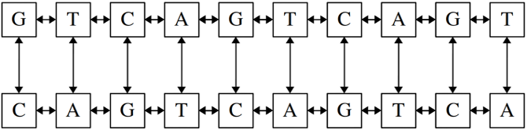
We can represent a double-stranded DNA sequence as a modified doubly-linked list of nucleotides, where each nucleotide links to the nucleotides before and after it in the sequence, as well as to the nucleotide across from it:
struct Nucleotide {
char value; // 'A', 'C', 'G', or 'T'
Nucleotide* next; // To the right
Nucleotide* prev; // To the left
Nucleotide* across; // Vertically, to the other strand.
};
For example, in the picture shown above, the nucleotide G in the upper-left corner would have its prev pointer set to nullptr, its next pointer set to the T nucleotide next to it, and its across pointer set to the C beneath it. The C nucleotide beneath it would have its next pointer set to the A to its right, its prev pointer set to nullptr, and its across pointer back to the G in the top strand.
Your task is to finish writing a function that works as follows. The function takes as input a single strand of DNA whose across pointers have not been initialized. The function then constructs the complementary strand, then links the two strands together by appropriately wiring the across pointers of the two strands.
Here is the implementation we’ve provided to you. As indicated by the comment, your task is to fill in the contents of the while loop. You must not add, remove, or edit the code outside the body of the while loop.
char complementOf(char base) {
if (base == 'A') return 'T';
if (base == 'C') return 'G';
if (base == 'G') return 'C';
if (base == 'T') return 'A';
error("Unknown nucleotide.");
}
void addComplementaryStrand(Nucleotide* dna) {
while (dna != nullptr) {
/* TODO: Add your code here! */
}
}
Some notes on this problem:
- The
acrosspointers of each of the nucleotides in the input sequence have not been initialized when this function is called. You should not assume anything about where they point. - For full credit, your solution must run in time O(n), where n is the number of nucleotides in
dna. - The input pointer will always point to the first nucleotide in the strand, or will be
nullptrif the input DNA strand is empty. - You can assume all letters in the DNA strand are either A, C, G, or T.
- You may not use any container types (e.g.
Vector,Set, etc.) in the course of solving this problem. This includes thestringtype.
There are several options here. Here’s one:
char complementOf(char base) {
if (base == 'A') return 'T';
if (base == 'C') return 'G';
if (base == 'G') return 'C';
if (base == 'T') return 'A';
error("Unknown nucleotide.");
}
void addComplementaryStrand(Nucleotide* dna) {
while (dna != nullptr) {
Nucleotide* partner = new Nucleotide;
/* Set the value. */
parnter->value = complementOf(dna->value);
/* Wire the across pointers. */
dna->across = partner;
partner->across = dna;
/* As of now, this cell has no next pointer, since we haven't built the
* next cell yet.
*/
partner->next = nullptr;
/* There may be a previous cell, though. */
if (dna->prev != nullptr) {
partner->prev = dna->prev->across;
dna->prev->across->next = partner;
} else {
partner->prev = nullptr;
}
/* Walk forward to the next cell. */
dna = dna->next;
}
}
Why we asked this question: This question was designed to see if you were comfortable with a few different aspects of linked list management: how to traverse a linked list forward, how to create new cells, how to link into a doubly-linked list, etc. There are a good number of moving parts here, but fortunately most of them are independent of all the others.
Common mistakes: One of the most common mistakes we saw on this problem was misinterpreting the statement “The function takes as input a single strand of DNA whose across pointers have not been initialized.”
This statement is meant to be taken literally. You are given a single DNA strand, and the across pointers have not been initialized. Many of you interpreted this to mean that the across pointers have been initialized to point to new Nucleotide objects, but those objects haven’t been initialized. That’s a different scenario than the one presented. In that case, all the Nucleotides are there, and all you have to do is link them. In the situation we wanted you to work through, you only have half the Nucleotides you need, and you need to create and then link the Nucleotides used in the other strand.
We also saw many solutions that ran into trouble with scoping issues. Many of you tried solving this problem by maintaining a pointer to the most-recently-constructed nucleotide, which you could then use to wire the nucleotides together more easily. However, because in this problem we constrained you to only write code inside the body of the while loop, this approach can’t be made to work because any local variables you’d made inside that loop would get reset on each loop iteration.
There were a couple of off-by-one errors where, on each iteration of the loop, the solution would create a nucleotide to pair with the current nucleotide, as well as a second one for its next pointer. This usually led to off-by-one errors where the resulting list would have too many nucleotides, though sometimes only in edge cases.
Problem Ten: Huffman Sleuthing
Oops! We used the Huffman coding algorithm from Assignment 8 to determine codes for a bunch of characters, but we forgot the encoding of the character G.
| Character | Encoding |
|---|---|
| A | 1010 |
| B | 110 |
| C | 100 |
| D | 11101 |
| E | 1111 |
| F | 0 |
| G | ¯\_(ツ)_/¯ |
| H | 11100 |
Your task is to help us figure out what the code for G is.
To do so, grab a sheet of scratch paper and draw as much of the Huffman coding tree as you can given the codes shown above. Once you’ve done so, look over that tree and see if anything about it looks unusual. That will let you determine what the code for G is.
Code for G: _______
(No justification is needed. Incorrect answers will not receive points, but otherwise there is no penalty for an incorrect guess.)
Code for G: 1011.
To see where this comes from, here’s the partial Huffman tree that results from these codes:
![A partial Huffman tree; all pointers to left children are labelled with a 0 and all pointers to right children are labelled with a 1. We will refer to left and right children as child 0 and child 1 respectively. Root node has child 0 f and non-terminal node as child 1. This node (one degree from root) has two children, both non-terminal nodes. Child 0 (two degrees down from root node) has child 0 C and child 1 non-terminal node. Child 1 of this node, which is now three degrees away from the root node, has child 0 A and child 1 G. Child 1 of the non-terminal node one degree away from root has two children, child 0 B and a non-terminal child 1 node (two degrees away from root). The non-terminal node has two children, a non-terminal child 0 (three degrees from root) and child 1 E. The non-terminal node (four degrees away from root) has child 0 H and child 1 D.](img/huffman.png)
We can tell that G has to go in the indicated spot for a few reasons:
- In a coding tree, all the letters have to go in the leaves. This is the only spot we can add a leaf.
- In a Huffman tree, each node either has no children or exactly two children. Therefore, the node in the tree that has one child must really have two children, with the missing child being G.
- A Huffman tree is optimal. If G didn’t go here, then we could improve the code for A by putting A in its parent rather than its current spot.
Why we asked this question: This question was designed to see if you’d built an intuition for Huffman coding and what sorts of trees come back beyond the mechanics of how to actually build one. We hoped that you be able to get the tree shown above from the codes, and from there to work out where G would have to go by using one of the above lines of reasoning (or another one we didn’t think of!)
Problem Eleven: Inflating Trees
Consider the following type representing a node in a binary tree (though not necessarily a binary search tree):
struct Node {
int value;
Node* left;
Node* right;
};
Given a binary tree represented this way, we can inflate the binary tree by replacing all null pointers that appear in the original tree with new nodes, where each node’s value is the sum of the integers on the path from the root of the tree to that node. (One edge case: if the tree is empty, we replace the root with a new node whose value is zero). For example, here’s some sample trees and the result of inflating each of them. We’ve explicitly drawn in the null left and right pointers on the initial trees to make the transformation clearer. Although the null pointers aren’t drawn in on the trees to the right, they are still present.
![Three examples of inflating binary trees. In the first example, the root node with value 1 has only a left child with value 3. After `inflate`, the root node with value 1 has a left child with value 3, which has left and right children of value 4 (the sum of 1 + 3). The root node with value 1 also has a right child of value 1. In the second example, the root node has value 6 and it has a left child with value -3 and a right child with value 4. After `inflate`, the root node has value 6, the left and right child are still -3 and 4 respectively, but each child now has two children -- both children of the root node's left child (value -3) have value 3, and both children of the root node's right child (value 4) have value 10. In the third example, we have an empty binary tree with no root node (the tree is just a nullptr). After `inflate`, the empty tree becomes a single node with value 0.](img/inflate.png)
Write a function
void inflate(Node*& root);
that takes as input a pointer to the root of a tree (or to nullptr if the tree is empty), then inflates the tree. Some notes:
- Your solution does not have to be as efficient as possible, but you should avoid any unnecessary inefficiencies in your solution.
- You may not use any container types (e.g.
Vector,Set, etc.) in the course of solving this problem.
Here’s one possibility. This works by passing the sum of all the numbers encountered so far down the recursion until we hit a null pointer:
void inflate(Node*& root) {
inflateRec(root, 0);
}
void inflateRec(Node*& root, int pathSum) {
/* Base case: If we hit null, replace it with the path sum. */
if (root == nullptr) {
root = new Node { pathSum, nullptr, nullptr };
}
/* Recursive case: inflate all nulls in the left and right subtrees, taking
* the current node's value into account.
*/
else {
inflateRec(root->left, pathSum + root->value);
inflateRec(root->right, pathSum + root->value);
}
}
Why we asked this question: This question was designed to look at two different skills. First, there’s the question of how to move information around recursive calls. Here, we need to remember the sum of all the numbers above us at each point in time, and so we have a second parameter that tracks this bit, which we update with each call. Second, we have to walk the whole tree, which we do with the branching recursive call. As you can see, you don’t need all that much code here. The real challenge is figuring out how to walk up and down the tree passing the right information around.
Problem Twelve: Random Bag Lists
On Assignment 6 and Assignment 7, you gained experience writing classes that worked with dynamically-allocated memory. Assignment 8 also specifically asked you to work with doubly-linked lists. This question will ask you to implement another data structure with a doubly-linked list.
The very first class we designed in CS106B was the RandomBag. If you’ll recall, the RandomBag supported two operations:
add, which adds an element to the random bag, andremoveRandom, which removes and returns a random element out of theRandomBag.
When we first implemented RandomBag, we layered it on top of the Vector type. We’d like you to now go and reimplement RandomBag, layered on top of a doubly-linked list.
For simplicity, we’ve only asked you to implement the constructor, add, and removeRandom. You don’t need to implement a destructor or any other member functions. You’re welcome to add new member functions and data members if you’d like.
Your implementation of removeRandom should have an equal probability of returning any of the elements currently stored in the RandomBag and should not leak any memory. Additionally, removeRandom should call error, with whatever error message you think is most amusing, if the RandomBag is empty.
Feel free to use this function to generate random numbers:
int randomInteger(int low, int high); // Between low and high, inclusive
To receive full credit on this problem, you should not use any of the standard container types (Vector, Map, Set, etc.) in your solution, since the purpose of this problem is for you to implement a custom type without layering on top of an existing container.
For full credit, your implementation of add should run in time O(1) and your implementation of removeRandom should run in time O(n), where n is the number of elements in the RandomBag.
There are several ways to code this up. Here’s an initial version, which uses a doubly-linked list that doesn’t have any dummy cells:
/****** RandomBag.h ******/
class RandomBag {
public:
RandomBag();
void add(int value);
int removeRandom();
private:
struct Cell {
int value;
Cell* next;
Cell* prev;
};
Cell* head;
int numElems;
};
/****** RandomBag.cpp ******/
#include "RandomBag.h"
#include "random.h"
#include "error.h"
/* Constructor just sets things up so that everything is empty. */
RandomBag::RandomBag() {
head = nullptr;
numElems = 0;
}
/* Add prepends an element to the front of the list. */
void RandomBag::add(int value) {
Cell* cell = new Cell;
cell->value = value;
cell->next = head;
cell->prev = nullptr;
/* Update the head to point back to us. */
if (head != nullptr) head->prev = cell;
/* Either way, we're at the front of the list. */
head = cell;
numElems++;
}
/* Remove chooses and removes a single element. */
int RandomBag::removeRandom() {
if (numElems == 0) error("Such things are not to be found in the void.");
/* Choose the element to remove. */
int index = randomInteger(0, numElems - 1);
/* Find that element. */
Cell* toRemove = head;
for (int i = 0; i < index; i++) {
toRemove = toRemove->next;
}
/* Splice that cell out of the list. */
if (toRemove->prev != nullptr) toRemove->prev->next = toRemove->next;
if (toRemove->next != nullptr) toRemove->next->prev = toRemove->prev;
/* We may be the head of the list. If so, go update that. */
if (toRemove == head) head = toRemove->next;
/* Update element count so we know how many items exist. */
numElems--;
/* Deallocate the memory for this cell. */
int result = toRemove->value;
delete toRemove;
return result;
}
Here’s an alternative that uses a dummy head and tail cell. This one also doesn’t explicitly keep track of how many cells are in the list, requiring two passes to do a removeRandom.
/****** RandomBag.h ******/
class RandomBag {
public:
RandomBag();
void add(int value);
int removeRandom();
private:
struct Cell {
int value;
Cell* next;
Cell* prev;
};
Cell* head;
Cell* tail;
int numElems() const;
};
/****** RandomBag.cpp ******/
#include "RandomBag.h"
#include "random.h"
#include "error.h"
/* Create a dummy head and tail cell. */
RandomBag::RandomBag() {
head = new Cell;
tail = new Cell;
/* They point to each other. */
head->next = tail;
tail->prev = head;
/* They demarcate the bounds. */
head->prev = tail->next = nullptr;
}
/* Add prepends an element to the front of the list. */
void RandomBag::add(int value) {
Cell* cell = new Cell;
cell->value = value;
/* Splice this into the list. */
cell->next = head->next;
cell->next->prev = cell;
cell->prev = head;
cell->prev->next = cell;
}
/* Remove chooses and removes a single element. */
int RandomBag::removeRandom() {
if (head->next == tail) error("Cannot create values ex nihilo.");
/* Choose the element to remove. */
int index = randomInteger(0, numElems() - 1);
/* Find that element. */
Cell* toRemove = head->next;
for (int i = 0; i < index; i++) {
toRemove = toRemove->next;
}
/* Splice that cell out of the list. */
toRemove->prev->next = toRemove->next;
toRemove->next->prev = toRemove->prev;
/* Deallocate the memory for this cell. */
int result = toRemove->value;
delete toRemove;
return result;
}
/* Counts the number of (non-dummy) cells in the list. */
int RandomBag::numElems() const {
int result = 0;
for (Cell* curr = head->next; curr != tail; curr = curr->next) {
result++;
}
return result;
}
Why we asked this question: We included this question for a number of reasons. First, we wanted to let you show us what you’d learned about defining an implementing a class backed by dynamic memory. Do you need a head pointer or a tail pointer? Do you need dummy elements? These decisions are all worth pondering, and we hoped you’d think through them while working on this problem.
Second, we wanted to give you practice traversing linked lists (here, to find an element to remove), one of the major list operations. Third, we wanted to see how you’d handle boundary cases like removing from a list when there’s only a single element or inserting into an otherwise empty list.
Finally, wanted to see how well you’d internalized pointer manipulation techniques and memory management. Given that removeRandom isn’t supposed to leak memory, which cells, specifically, need to be reclaimed? How do you sequence that memory cleanup along with the other operations?
Common mistakes: Many of the issues we saw people run into on this problem stemmed from simple, run-of-the-mill pointer mistakes. Some solutions forgot to account for the case where the list was empty or had just a single element, accidentally reading or writing null pointers. Others didn’t do all the proper linked list wiring (for example, forgetting to set one of the previous pointers of a linked list cell). Some solutions used dummy nodes but forgot not to count them when determining which node to select. Many answers forgot to deallocate the removed cell, or deallocated the cell and then tried reading its contents.
Other issues we encountered seemed to stem from a misunderstanding of what was being asked. Some solutions treated the RandomBag::add function’s value parameter as a number of random elements to add to the random bag rather than as a specific value that was supposed to be stored. Other solutions didn’t attempt to remove anything in removeRandom. A few solutions used a singly-linked list rather than a doubly-linked list (oops).
Some solutions came up with options that technically worked but which were highly inefficient. For example, some solutions would generate a random number representing a value to remove, then iterate over the list to see whether it was there. If this didn’t work, they’d repeat this process. While this technically works, it’s likely going to take a long time to remove an element from the random bag if, say, there’s just a single element in the list.
Problem Thirteen: Agglomerative Clustering
A full binary tree is a binary tree where each node either has two children or no children. Here are some sample full binary trees: 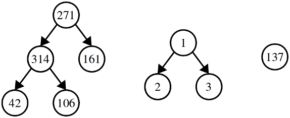
Note that full binary trees are not necessarily binary search trees.
Let’s imagine that we have a type representing a node in a full binary tree, which is shown here:
struct Node {
double value; // The value stored in this node
Node* left; // Standard left and right child pointers
Node* right;
};
Your first task in this problem is to write a function
Set<double> leavesOf(Node* root);
that takes as input a pointer to the root of a full binary tree, then returns a set of all the values stored in the leaves of that tree. For example, calling this function on the leftmost tree above would return a set containing {42, 106, 161}, calling this function on the tree in the middle would return {2, 3}, and calling this function on the tree on the right would return {137}.
Some notes:
- You can assume that the pointer to the root of the tree is not null.
- You should completely ignore the values stored at the intermediary nodes.
The second part of this problem explores an algorithm called agglomerative clustering that, given a collection of data points, groups similar data points together into clusters of similar values. The algorithm works by starting with a bunch of singleton nodes and assembling them into full binary trees. For the purposes of this problem, we’ll cluster a group of doubles.
The first step in running agglomerative clustering is to create singleton trees for each of the data points. For example, given the numbers 1, 6, 8, 18, 33, and 37, we’d begin with the following trees: 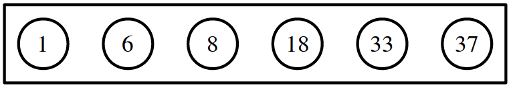
We now choose the two trees whose root nodes’ values are closest to one another. Here, we pick the trees holding 6 and 8. We then merge those two trees into a single tree, and give the root of the new tree the average value of all its leaves. Here, the leaves hold 6 and 8, so the new tree has root value 7: 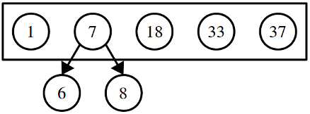
We repeat this process, again selecting the two trees whose root values are as close as possible. In this case, that would be 33 and 37, which get merged into a new tree: 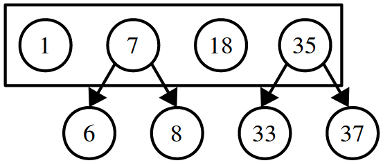 Notice that the new root node has the value 35, the average value of its leaves.
On this next step, we’ll find that the trees with the two closest roots are the ones with roots 1 and 7. We merge those trees into a new tree. As before, the root of this tree is then assigned the average value of all its leaves. The leaves have values 1, 6, and 8, so the new root gets the value 5. Here’s the result: 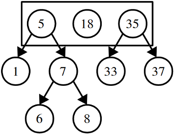
Each step in this process reduces the number of trees by one. We’ll stop this algorithm once we’ve reduced things down to a small number of trees; how many trees, exactly, we’ll leave as a parameter for the user to specify.
If we stop here, we have three clusters: the cluster {1, 6, 8}, the cluster {18}, and the cluster {33, 37}, which you can see by looking at the leaves of the resulting trees.
Write a function
Set<Node*> cluster(const Set<double>& values, int numClusters);
that takes as input a set of values and a desired number of clusters, then runs the agglomerative clustering algorithm described on the previous page to form the specified number of clusters. This function should then return a Set<Node*> containing pointers to the roots of the trees formed this way. Some notes:
- You can assume the number of clusters is less than or equal to the number of values and greater than or equal to one (the algorithm only works on values in those ranges).
- If there’s a tie between which pair of tree roots is closest, break the tie however you’d like.
- You’ll almost certainly want to use the
leavesOffunction you wrote in the first part of this function in the course of writing up your solution.
There are many ways to implement the leavesOf function. The first solution works by returning values upward through the recursion, and the second solution works by filling an outparameter:
Set<double> leavesOf(Node* root) {
/* Base Case: The set of values in a leaf node is just the one value here. */
if (root->left == nullptr) return { root->value };
/* Recursive Step: Combine the sets from the left and right subtrees. */
return leavesOf(root->left) + leavesOf(root->right);
}
Set<double> leavesOf(Node* root) {
Set<double> result;
leavesOfRec(root, result);
return result;
}
void leavesOfRec(Node* root, Set<double>& result) {
if (root->left == nullptr) {
result += root->value;
} else {
leavesOfRec(root->left, result);
leavesOfRec(root->right, result);
}
}
Here’s one possible implementation of the clustering code:
/* Helper struct representing a pair of nodes. */
struct NodePair {
Node* first;
Node* second;
};
Set<Node*> cluster(const Set<double>& values, int numClusters) {
Set<Node*> trees = makeSingletons(values);
/* Keep merging trees until we have the specified number required. */
while (trees.size() != numClusters) {
/* Find the closest pair of trees. */
NodePair closest = closestTreesIn(trees);
/* Merge them together. */
Node* root = new Node;
root->left = closest.first;
root->right = closest.second;
root->value = averageOf(leavesOf(root));
/* Remove the old trees from the set. */
trees -= closest.first;
trees -= closest.second;
/* Add in this new tree. */
trees += root;
}
return trees;
}
/* Computes the average of a set of doubles. */
double averageOf(const Set<double>& values) {
double total = 0.0;
for (string value: values) {
total += value;
}
return total / values.size();
}
/* Given a set of values, forms a set of singleton trees from those values. */
Set<Node*> makeSingletons(const Set<double>& elems) {
Set<Node*> result;
for (double val: elems) {
Node* singleton = new Node;
singleton->value = val;
singleton->left = singleton->right = nullptr;
result += singleton;
}
return result;
}
/* Given a pair of doubles, returns the distance between them. */
double distance(double one, double two) {
/* Distance is the absolute value of their difference. */
return fabs(one - two);
}
/* Given a set of trees, returns the two trees with the closest roots. */
NodePair closestTreesIn(const Set<Node*>& trees) {
NodePair result;
double bestDistance = INFINITY;
for (Node* one: trees) {
for (Node* two: trees) {
if (one != two) { // Don’t merge a tree with itself!
if (distance(one->value, two->value) < bestDistance) {
result.first = one;
result.second = two;
bestDistance = distance(one->value, two->value);
}
}
}
}
return result;
}
Why we asked this question: As the title suggests, this question was designed to see how comfortable you’ve become working with trees and tree structures. The first part of this problem was a tree recursion problem to make sure you were comfortable with the idea of exploring all the nodes in a tree. The second part of this problem (for which I have to give credit to Chris Piech for the concept) was designed to let you demonstrate what you’d learned about bottom-up tree assembly. We hoped that the core idea – find two close trees, merge them, repeat – would let you show what you’d learned about collections of tree nodes, assembling trees bottom-up, and reporting multiple values across different function calls.
It turns out that with the right data structures you can implement this algorithm so that it runs in time O(n log n). Take CS166 if you’re curious how to do this!
Problem Fourteen: Rainwater Collection
You are interested in setting up a collection point to funnel rainwater into a town's water supply. The town is next to a ridge, which for simplicity we will assume is represented as an array of the elevations of different points along the ridge. When rain falls on the ridge, it will roll downhill along the ridge. We'll call a point where water naturally accumulates (that is, a point lower than all neighboring points) a “good collection point.” For example, here is a possible ridge with good collection points identified: 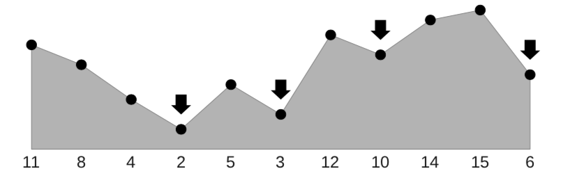 Write a recursive function
int goodCollectionPointFor(const Vector<int>& heights);
that returns the index of a good collection point. Your solution should run in time O(log n). As a hint, think about binary search. You can assume that all elements in the array are distinct.
The key insight here is to look at the two middle elements of the array to see which direction they slope downhill. Imagine that the water would flow to the left. Then, if we look in the first half of the array, we know there has to be a good collection point somewhere to the left, since if the water flows downhill it has to collect somewhere over there. Using this insight, we can modify our binary search to look like this:
/* Given an index into the ridge, returns whether the given index is a good
* collection point. That happens if both of the position's neighbors are higher
* than the position itself.
*/
bool isGoodPoint(const Vector<double>& heights, int index) {
/* Handle boundary cases by pretending the boundaries are infinitely high. */
double left = (index == 0? INFINITY : heights[index – 1]);
double right = (index == heights.size() - 1? INFINITY: heights[index + 1]);
return heights[index] < left && heights[index] < right;
}
/* Return the index of a good collection point in the interval [start, end). Note
* that start is inclusive and that end is exclusive.
*/
int goodCollectionPointRec(const Vector<double>& heights, int start, int end) {
/* Base case: If the midpoint is a collection point, we're done. */
int mid = start + (end – start) / 2;
if (isGoodPoint(heights, mid)) return mid;
/* If we are on a downward facing slope (left is greater than curr)
* then search to the right of here
*/
if (mid > 0 && heights[mid - 1] > heights[mid]) {
return goodCollectionPointRec(heights, mid + 1, end);
}
/* Otherwise we are on upward facing slope; collection point is to the left
* so we can limit our search to the left range.
*/
else {
return goodCollectionPointRec(heights, start, mid);
}
}
int goodCollectionPointFor(const Vector<double>& heights) {
return goodCollectionPointRec(heights, 0, heights.size());
}
(Thanks to legendary SL Ali Malik for this code!)
Problem Fifteen: Palindromic Trees
A binary tree (not necessarily a binary search tree) is called a palindromic tree if it’s its own mirror image. For example, the tree on the left is a palindromic tree, but the tree on the right is not:
![The tree on the left is a palindromic tree. It looks like this: Node 3 on the first level, nodes 2 and 2 on the second level, nodes 5, 4 and 4, 5 on the third level, and nodes 1 & 2 under the left-most node 4 and nodes 2&1 under the right-most node 4. The tree on the right is not a palindromic tree. It looks like this: Node 3 on the first level, nodes 1 and 1 on the second level, nodes 1 & 2 as the children of the left-most 1 node on the third level, and nodes 1 & 2 as the children of the right-most node on the third level.](img/palindromeTree15.png) Write a function that takes in a pointer to the root of a binary tree and returns whether it’s a palindrome tree.
Write a function that takes in a pointer to the root of a binary tree and returns whether it’s a palindrome tree.
To solve this problem, we’ll solve a slightly more general problem: given two trees, are they mirrors of one another? We can then check if a tree is a palindrome by seeing whether that tree is a mirror of itself.
bool isPalindromicTree(Node* root) {
return areMirrors(root, root);
}
bool areMirrors(Node* root1, TreeNode* root2) {
/* If either tree is empty, both must be. */
if (root1 == nullptr || root2 == nullptr) {
return root1 == root2;
}
/* Neither tree is empty. The roots must have equal values. */
if (root1->value != root2->value) {
return false;
}
/* To see if they're mirrors, we need to check whether the left subtree of
* the first tree mirrors the right subtree of the second tree and vice-versa.
*/
return areMirrors(root1->left, root2->right) &&
areMirrors(root1->right, root2->left);
}
(Thanks to legendary SL Ali Malik for this code!)
Problem Sixteen: The Great Tree List Recursion Problem
This excellent problem by Nick Parlante
A node a binary tree has the same fields as a node in a doubly-linked list: one field for some data and two pointers. The difference is what those pointers mean: in a binary tree, those fields point to a left and right subtree, and in a doubly-linked list they point to the next and previous elements of the list. Write a function that, given a pointer to the root of a binary search tree, flattens the tree into a doubly-linked list, with the values in sorted order, without allocating any new cells. You’ll end up with a list where the pointer left functions like the prev pointer in a doubly-linked list and where the pointer right functions like the next pointer in a doubly-linked list.
This is a beautiful recursion problem. Essentially, what we want to do is the following:
- The empty tree is already indistinguishable from the empty list.
- Otherwise, flatten the left subtree and right subtree, then concatenate everything together.
To implement that last step efficiently, we’ll have our recursive function hand back two pointers: one to the front of the flattened list and one to the back.
struct Range {
Node* first;
Node* last;
};
Node* treeToList(Node* root) {
return flatten(root).first;
}
Range flatten(Node* root) {
/* If the tree is empty, it's already flattened. */
if (root == nullptr) return { nullptr, nullptr };
/* Flatten the left and right subtrees. */
Range left = flatten(root->left);
Range right = flatten(root->right);
/* Glue things together. */
root->left = left.last;
if (left.last != nullptr) left.last->right = root;
root->right = right.first;
if (right.first != nullptr) right.first->left = root;
/* Return the full range. */
return {
left.first == nullptr? root : left.first,
right.last == nullptr? root : right.last
};
}
Problem Seventeen: Changing Passwords
Looking to change your password? Rather than picking a password that’s a common word or phrase with a bunch of random numbers thrown in, consider using a multi-word password formed by choosing some sequence of totally random words out of the dictionary. Choosing four totally random words, it turns out, tends to be a pretty good way to make a password. Here’s a couple passwords you might make that way:
RantingCollegersDenoteClinching VivificationPandectYawnedCarmine DetachednessHowlinglySportscastsVapored UnlearnedMockeriesTuskedChuckles SharpshootingPreyParaffinsLibeler
We generated these particular passwords using the following piece of code:
string makeRandomPassword(const Vector<string>& wordList) {
string result;
for (int i = 0; i < 4; i++) {
int wordIndex = randomInteger(0, wordList.size() - 1);
result += wordList[wordIndex];
}
return result;
}
When we ran this code, we used a word list containing about 120,000 words. There are other word lists available that we could have picked. The Basic English dictionary, for example, only has about 5,000 words. A more elaborate dictionary called ENABLE has about 180,000 words. It’s therefore not all that unreasonable for us to analyze the efficiency of the above code in terms of the number of words n in our word list.
-
Let $n$ denote the number of words in wordList. What is the big-O time complexity of the above code as a function of $n$? You can assume that the words are short enough that the cost of concatenating four strings together is O(1) and that a random number can be generated in time O(1). Explain how you arrived at your answer. Your answer should be no more than 50 words long.
The cost of looking at the size of the
Vectoris O(1) and the cost of reading any element it is O(1). We do four reads and call size four times. Each operation takes time O(1). Therefore, this code runs in time O(1).
-
Let’s suppose that the above code takes 1ms to generate a password when given a word list of length 50,000. Based on your analysis from part (i), how long do you think the above code will take to generate a password when given a word list of length 100,000? Explain how you arrived at your answer. Your answer should be no more than 50 words long.
Since the runtime is O(1), it’s independent of the size of the
Vector. Therefore, we’d expect that this code would take 1ms to complete in this case.
Now, let’s think about how someone might try to break your password. If they know that you chose four totally random English words, they could try logging in using every possible combination of four English words. Here’s some code that tries to do that:
string breakPassword(const Vector<string>& wordList) {
for (int i = 0; i < wordList.size(); i++) {
for (int j = 0; j < wordList.size(); j++) {
for (int k = 0; k < wordList.size(); k++) {
for (int l = 0; l < wordList.size(); l++) {
string password = wordList[i] + wordList[j] + wordList[k] + wordList[l];
if (passwordIsCorrect(password)) {
return password;
}
}
}
}
}
}
As before, let’s assume that the words in our word list are short enough that the cost of concatenating four of them together is O(1). Let’s also assume that calling the passwordIsCorrect function with a given password takes time O(1).
-
What is the worst-case big-O time complexity of the above piece of code as a function of $n$, the number of words in the word list? Explain how you arrived at your answer. Your answer should be no more than 50 words long.
Working from the inside out: the code inside the loop on
ldoes O(1) work. Each of the loops oni,j,k, andlrun $n$ times. Multiplying this together gives a runtime of O($n^4$).
-
Imagine that in the worst case it takes 1,000 years to break a four-word password when given a word list of length 50,000. Based on your analysis from part (iii), how long will it take, in the worst case, to break a password when given a word list of length 100,000? Explain how you arrived at your answer. Your answer should be no more than 50 words long.
Since the runtime is O($n^4$), doubling the size of the input will increase the runtime by a factor of $2^4 = 16$. Therefore, we’d expect this would take 16,000 years to complete in the worst-case.
Problem Eighteen: Social Network Scaling
While most researchers agree that the value of a social network grows as the number of users grows, there’s significant debate about precisely how that value scales as a function of the number of users.
Suppose there’s a social network whose value, with its current number of users, is $10,000,000.
-
Sarnoff’s Law states that the value of a network is O(n), where n is the number of users on the network. Assuming Sarnoff’s law is correct, estimate how much the social network needs to grow to have value $160,000,000. Justify your answer. Your answer should be no more than 50 words long.
The network would need to grow to size roughly $16n$. Since the value of the network scales linearly, to get a 16× increase in value, you need roughly a 16× increase in size.
-
Metcalfe’s Law states that the value of a network is O($n^2$), where n is the number of users on the network. Assuming Metcalfe’s law is correct, estimate how much the social network needs to grow to have value $160,000,000. Justify your answer. Your answer should be no more than 50 words long.
The network would need to grow to size roughly $4n$. Since the value of the network scales quadratically, to get a 16× increase in value, you need roughly a 4× increase in size ($(4n)^2 = 16n^2$).
-
Reed’s Law states that the value of a network is O($2^n$), where n is the number of users on the network. Assuming Reed’s law is correct, estimate how much the social network needs to grow to have value $160,000,000. Justify your answer. Your answer should be no more than 50 words long.
The network would need to grow to size roughly $n + 4$. Note that $2^{n+4} = 2^n \cdot 2^4 = 16 \cdot 2^n$, so adding four more people increases the value of the network by the needed factor of sixteen.
Problem Nineteen: Graph Sleuthing
Consider the picture of the graph shown below:
![A graph with 12 nodes: X, C, V, A, L, Z, G, Q, R, K, H, and F. Node X is adjacent to nodes C and Q. Node C is adjacent to nodes X and V. Node V is adjacent to nodes C, A, and Q. Node A is adjacent to nodes V, L, and Z. Node L is adjacent to nodes A, Z, and G. Node Z is adjacent to nodes A, L, and G. Node G is adjacent to nodes L and Z. Node Q is adjacent to nodes X, V, and R. Node R is adjacent to nodes Q and K. Node K is adjacent to nodes R, H, and F. Node H is adjacent to nodes K and F. Node F is adjacent to nodes K and H](img/graph-sleuthing.png)
Suppose we run a breadth-first search on this graph, starting at node X. Whenever we dequeue a node from the BFS queue, we print out that node’s label.
-
Explain why it is impossible to get back the following sequence of nodes when running BFS on the above graph, starting at node X.
X, Q, C, R, V, K, Z, A, F, H, L, G
Please limit your answer to fifty words or fewer. As a hint, in what order does BFS visit nodes when exploring a graph?
There are many reasons why this sequence cannot be obtained. Here are a few:
“We should see the nodes in increasing order of distance. However, node Z is at distance 4 from the start node X, and it’s reported between nodes A and K, which are at distance 3 from the start node X, which is impossible.”
“Node Z appears before node A in the ordering, but there’s no path that reaches node A without first going through node V.”
“BFS cannot dequeue a node until one of its neighbors has first been dequeued. But Z appears before any of its neighbors appears, which breaks that rule.”
Now, a little more backstory. We did get the above sequence by running BFS on some graph. It just wasn’t the graph shown above. We’ll call the graph that we ran BFS on the mystery graph.
The mystery graph is identical to the above graph except that one additional edge has been added in. That edge, which is an undirected edge, links two nodes that do not appear to be linked in the above diagram. We’ll call that edge the mystery edge.
-
Based on the BFS traversal, the picture given above, and the fact that only one extra edge has been added in, you have enough information to narrow down the mystery edge to one of two possibilities. What are those two possibilities? No justification is required.
The two options are {V, Z} and {R, Z}.
To see why, the only way this BFS ordering is possible is if Z is at distance 3 from X. Since Z is currently at distance 4 from X, we know that Z has to be one of the endpoints of the edge. The other endpoint of the edge has to be something that’s at distance 2 from X, which would correctly make node Z at distance 3. That limits our options to {V, Z} and {R, Z}.
One last piece of information about the mystery graph. We additionally ran a DFS on the mystery graph, also starting from the node X. That DFS was implemented recursively, and whenever we made a recursive call on a node for the very first time, we printed out the label on that node. Here’s the sequence of nodes we got back:
X, Q, R, K, F, H, Z, G, L, A, V, C
Just to make sure that we’re clear about this, this is a DFS from the mystery graph, the one that has the extra edge added in relative to the above picture. The above sequence couldn’t be produced in the graph shown above.
-
Explain why it is impossible to get the above sequence of nodes as the result of DFS in the graph drawn above. Please limit your answer to fifty words or fewer.
There are many ways to account for this. Here are a few:
“After we visit node H, we should backtrack to the last node with a neighbor we haven’t yet seen. In the picture, that’s node Q, so we should have seen Q’s neighbor V after seeing H. But instead, we see Z.”
“This node ordering places A before V, but every path from X to A that passes through V first.”
“Node Z can only appear in a DFS ordering if one of its neighbors appears before it in the ordering, and none of Z’s neighbors appear before it.”
-
You now have enough information to identify the mystery edge. Which edge is it, and why? Please limit your answer to fifty words or fewer.
The mystery edge is {R, Z}. Based on our answer to part (iii), we know that there has to be an edge from something in the bottom half up to Z, or otherwise we’d visit node C after node H. Combining that with part (ii), the only possibility is {R, Z}.
Thanks for reading this far! Good luck on the final exam!